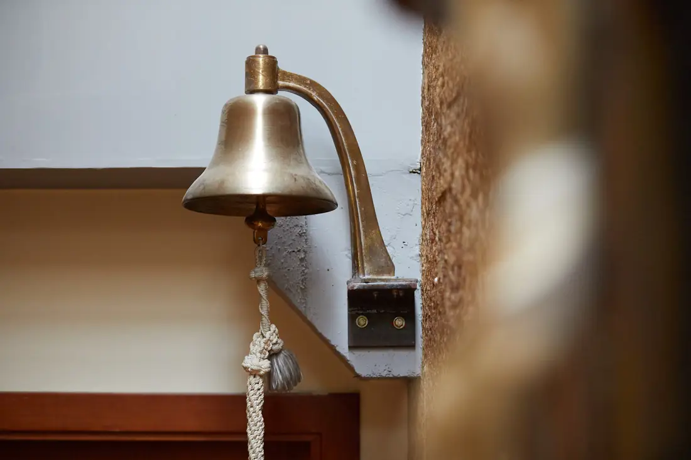
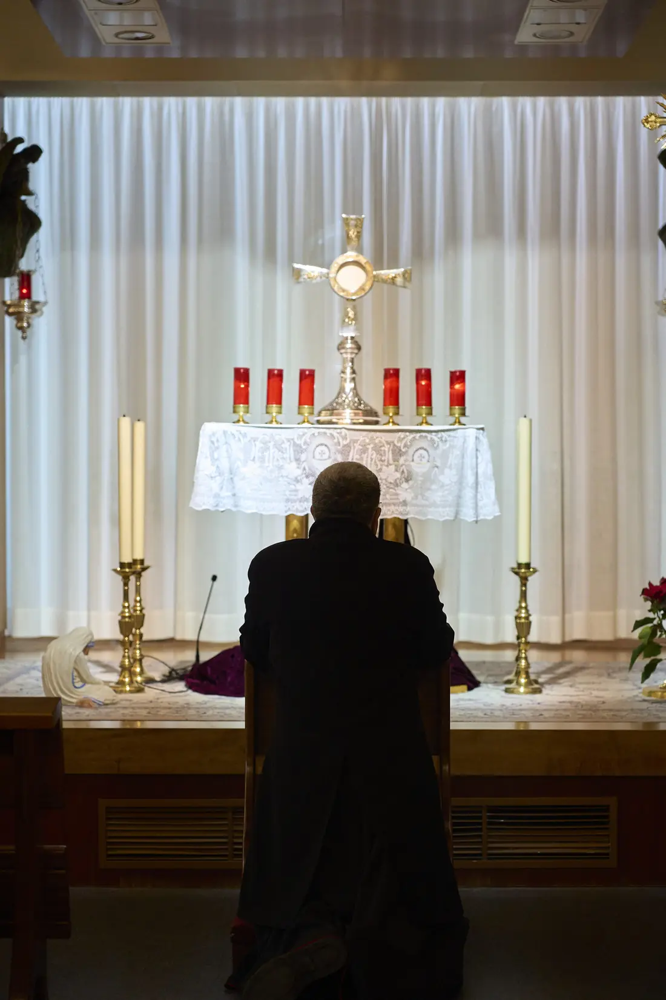

Horarios
Misas, confesiones, oración y actividades de la semana.

Misas
Lunes a viernes
- Monasterio
- no en verano
Sábados
- Monasterio
- no en verano
Domingos y festivos
- Monasterio
- Misa de niños
- no en verano
Del 1 de julio al 7 de septiembre se suprimen las misas marcadas «no en verano». El monasterio es el del Santísimo Sacramento. En Navidad, Semana Santa y otras fechas el horario puede cambiar: consulta los avisos.
1 de enero: misa de Año Nuevo a la 1:30. 25 de diciembre: misa del Gallo a las 0:00.
Confesión y oración
El horario puede cambiar en verano, Navidad y Semana Santa.

- Confesiones
- Media hora antes de cada misa, o siempre que estén los sacerdotes.
- Santo Rosario
- De lunes a viernes a las 9:30 (excepto festivos).
- Exposición del Santísimo
- De lunes a viernes de 9:30 a 20:30 (excepto verano y festivos).
- Rosario de la Aurora
- Primeros sábados de mes a las 8:30 (excepto festivos).
- Comunión reparadora
- Primeros sábados de mes, de 10:00 a 11:30.
- Oración de alabanza
- Lunes a las 20:00 (P. Pedro Pablo).
- La Hora de la Pasión
- Meditaciones los viernes a las 19:00.
- Acompañando a Jesús
- Jueves de 23:00 a 00:00 (excepto festivos).
- Adoración de niños
- Primer viernes de mes.
- Primer viernes de mes
- 21:15 reparación al Sagrado Corazón · 22:15 alabanza · 23:00 Adoración Nocturna.
- Adoración Nocturna Española
- Terceros viernes de mes, de 22:00 a 5:00.
La semana en la parroquia
| Catequesis de Iniciación Cristiana | Lunes a jueves 17:30–18:30 · lunes y martes 18:30–19:30 · sábados 11:00–12:00 |
|---|---|
| LifeTeen · 5º y 6º de Primaria y 1º de ESO | Viernes 17:30–19:00 |
| LifeTeen · 2º, 3º y 4º de ESO | Viernes 19:30–21:00 |
| Grupo Lázaro | Lunes 18:30–19:30 |
| Confirmación de adultos | Jueves 21:00–22:00 |
| Aula de Teología | Jueves cada 15 días, 19:00–20:00 |
| Grupos de adultos de Acción Católica | Distintos horarios según el grupo |
| Vida Ascendente | Jueves alternos 10:30 |
| Reuniones de Emaús | Mujeres: martes 19:30 · hombres: jueves 21:15 |
| Coro de adultos | Ensayo los miércoles 21:30 |
| Taller de costura | Martes 10:30–13:30 (excepto festivos) |
| Cáritas parroquial | Despacho: viernes 11:00–13:00 · alimentos: miércoles y jueves 11:00–13:00 · S.O.L.: miércoles 11:00–13:00 |
Secretaría: de lunes a viernes, de 17:00 a 19:00. Cerrada festivos y del 1 de julio al 31 de agosto.